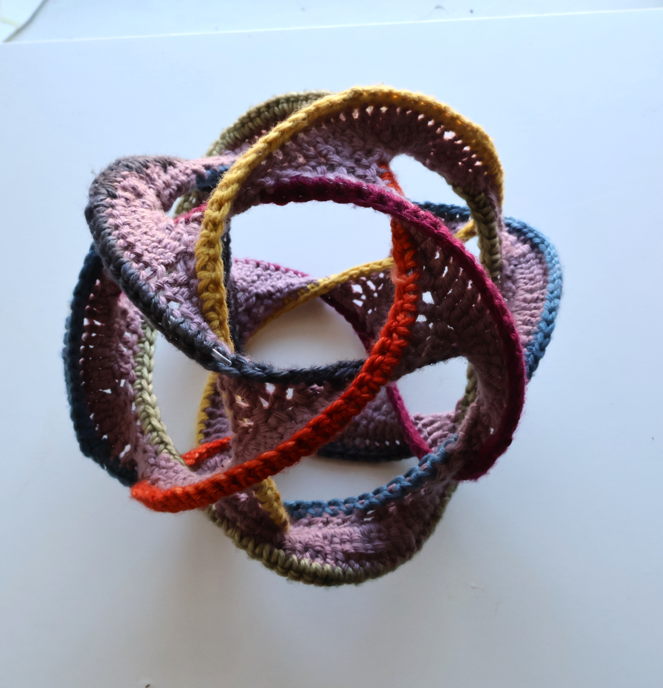
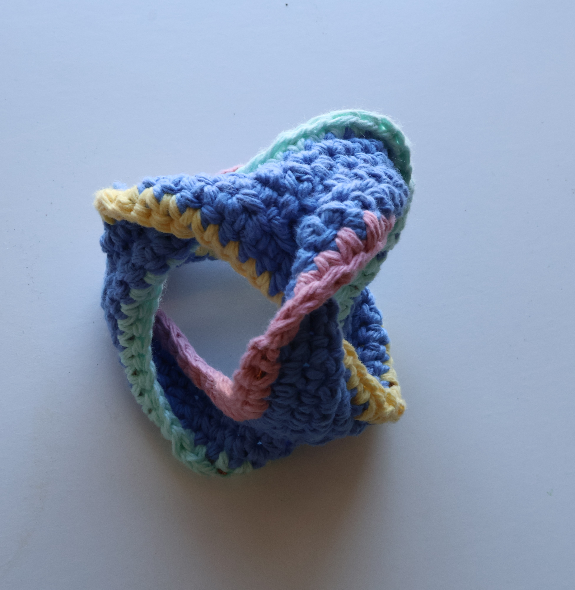
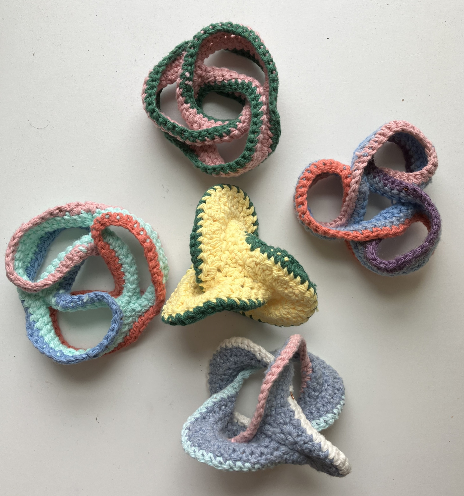
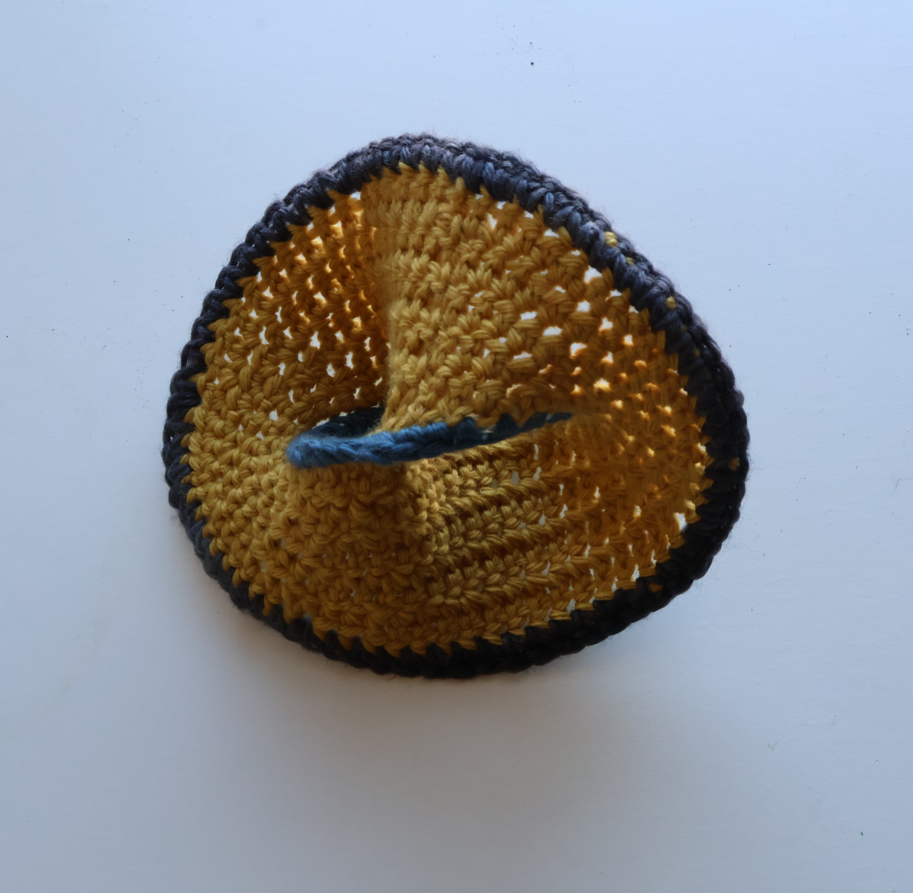
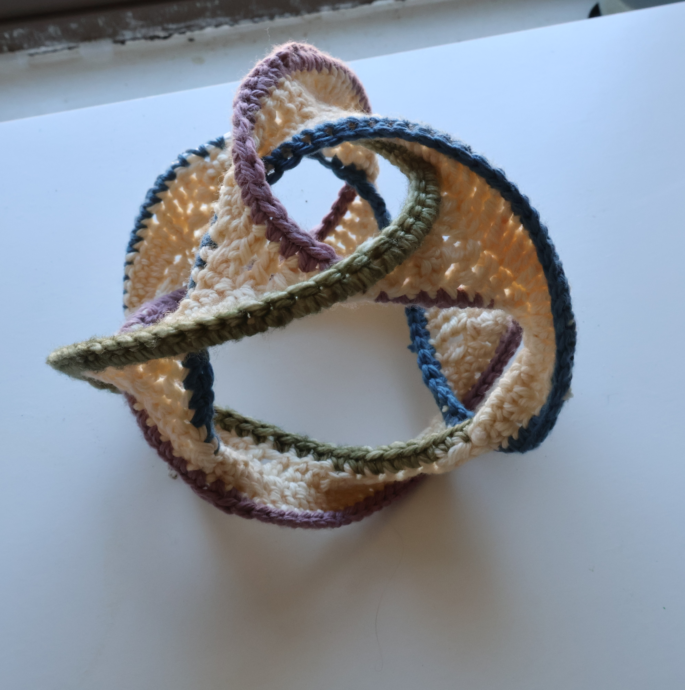
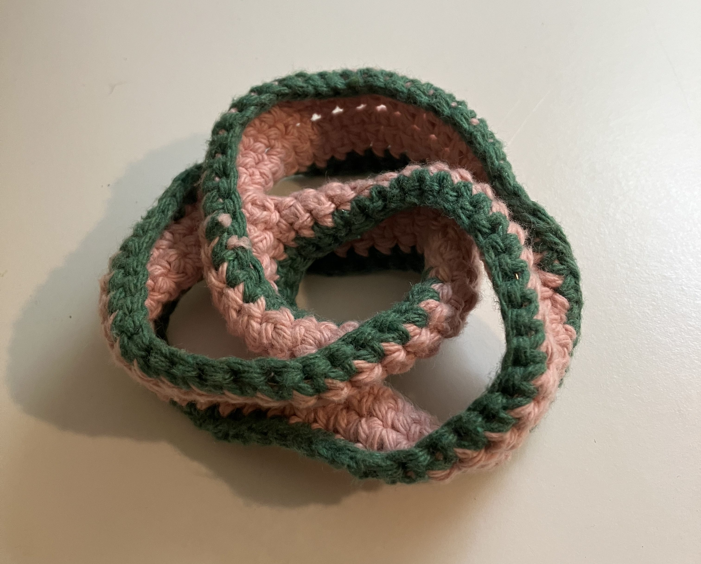

In 2023, I met Shiying Dong who taught me how to make crocheted Seifert surfaces of knots and links. Shiying is a phenomenal crochet artist. Her work has been exhibited at the Joint Math Meetings, the Bridges conference, and the upcoming (2026) International Congress of Mathematics. To get an overview of her work, see this video.
I continue to make models of Seifert surfaces using her techniques. I have also started holding my own topological crochet workshops at U Chicago to teach Shiying's designs. Here are all the resources I know of to learn to make Shiying's designs.






Here is a list of documents written by Shiying which outline instructions for her projects:
For video instructions, see the following: